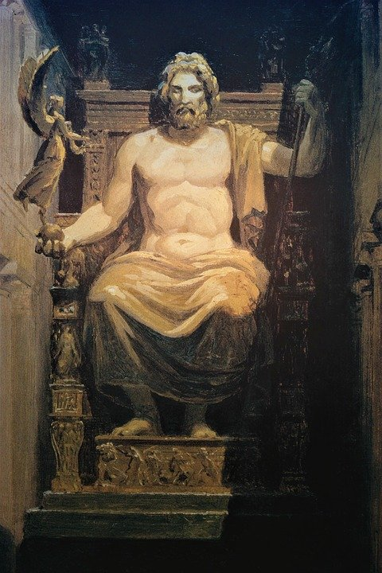
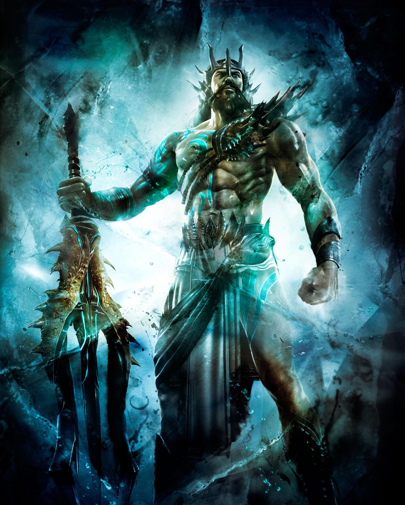
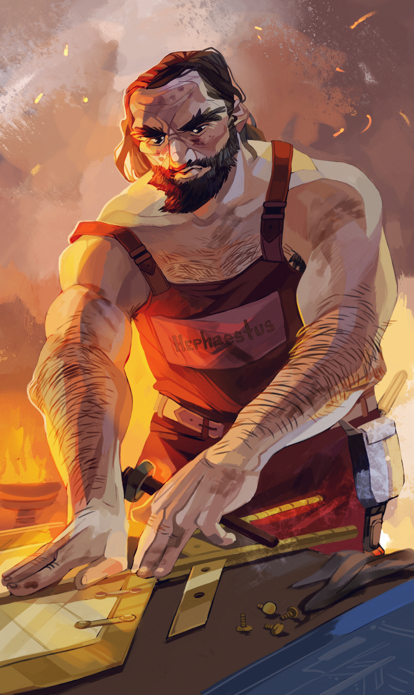
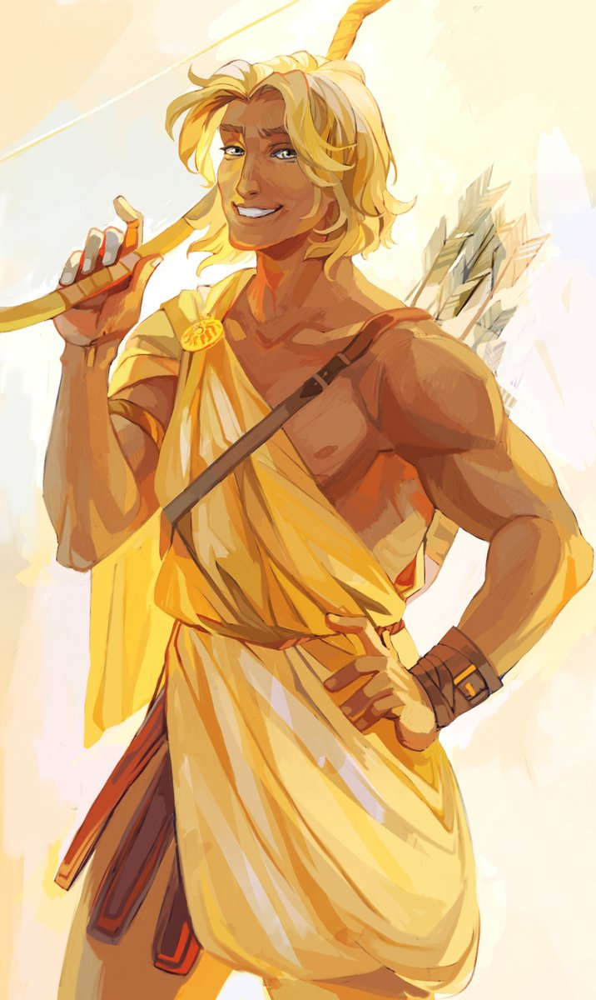
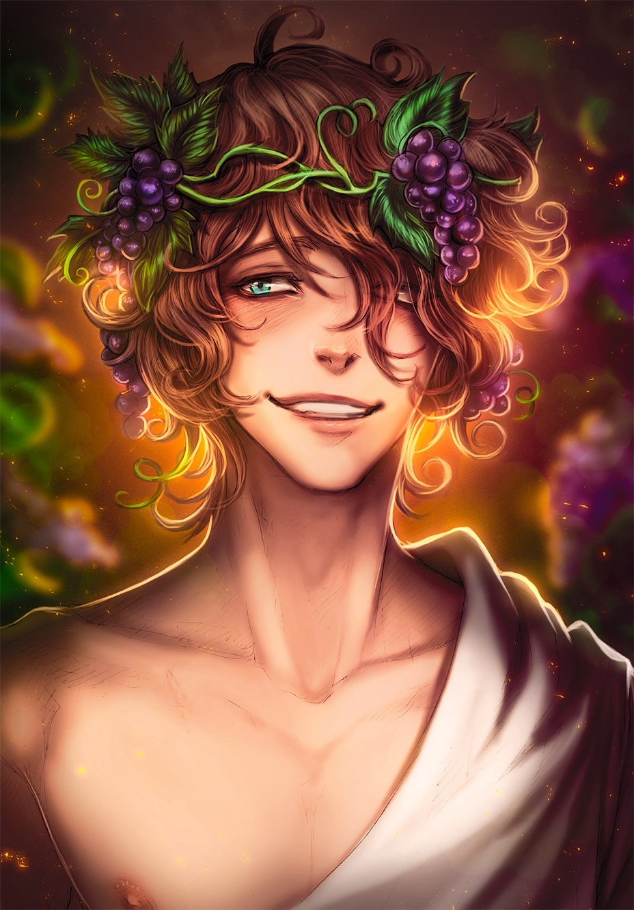
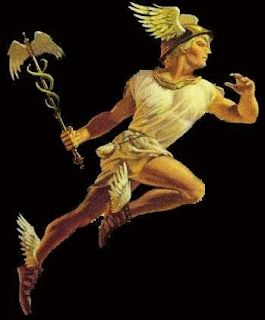

Zeus
Zeus son of Kronos and Rhea, is the God of the Sky and King of the Gods of Mount Olympus.
When he was born his father planned to swallow him as he did his other children.
However Rhea hid newborn baby Zeus and gave Kronos a rock diguised as the baby to swallow.
When he was old enough he caused Kronos to vomit up his siblings and they vanquished their father.
He then split up creation with his brothers.
He claimed the sky and became King of Gods and Mount Olympus.
He is represented by symbols such as the Lightning bolt and the Eagle.
His weapon is a lighting bolt fashioned by the 3 Cyclops.

Poseidon
Poseidon son of Kronos and Rhea is the god of the Sea, Earthquakes, and Horses.
He is represented by symbols such as Trident, Fish, Dolphin, Horse, Bull.
His weapon is a Trident and was fashioned by the 3 Cyclops.
Poseidon is considered one of not the most bad-tempered, moody and greedy.
He was known to be vengeful when insulted.
An example of this is when Athens chose Athena over him and then they
began shipping Olives (the gift from Athena) around Greece obviously by
ship, which led to very rough waters and storms when sailing the sea.

Ares
Son of Zeus and Hera, Ares is the god of war and courage.
Ares is a god of war, but also of destruction. Zeus tells Ares that his bloodlust makes him the most hated of the Olympians.
He often represents the physical or violent and untamed aspect of war and is the personification
of sheer brutality and bloodlust, in contrast to his sister Athena.
Ares’ attributes were a helmet, shield, and sword or spear.
He often started fights regardless of consequences.
Ares had an affair with Aphrodite, wife of Hephaestus.
Who was married to Aphrodite by Zeus to prevent a war of gods fighting for her hand.

Hephaestus
Hephaestus is the god of fire, metalworking, masonry, forges and the art
of sculpture. Son of Hera was Hera's parthenogenous child as revenge on Zeus for
Athena. However she did a terrible job and he came out deformed and munted and
was cast off Mount Olympus by his mother because of his deformity Hephaestus
gained revenge against Hera for rejecting him by making her a magical golden
throne, which, when she sat on it, did not allow her to stand up. The other gods
begged Hephaestus to return to Olympus to let her go, but he refused, saying
"I have no mother". At last, Dionysus fetched him, intoxicated him with wine, and
took the subdued smith back to Olympus on the back of a mule accompanied by revelers and brought him to heaven.

Apollo
Apollo son of Zeus and Leto, twin brother of Artemis.
He is the god of archery, music and dance, truth and prophecy, healing and diseases,
the Sun and light, poetry, and many more things.
Since Hera was annoyed that Zeus had cheated on her again she forbid Leto to give
birth on any land. However Apollo informed his mother about a floating island named Delos
that had once been Asteria, Leto's own sister. Since it was neither a mainland nor an island,
Leto was readily welcomed there and gave birth to her children under a palm tree.
Apollo's birth fixed the floating Delos to the Earth.
His symbols are bow and arrows, the lyre the raven, branch of laurel, wreath, the kithara,
the plectrun, the sword, and palm trees.

Dionysus
Son of zeus and Semele. Dionysus is the the god of the grape-harvest, winemaking
and wine, of fertility, orchards and fruit, vegetation, insanity, and more.
Dionysus is called "twice-born". Hera, queen of the gods, jealous because her
husband was playing around,(again) she punished the woman. In this case, Semele.
Zeus had visited Semele in human form but claimed to be a god.
Hera persuaded her that she needed more than his word that he
was divine. Zeus knew the sight of him in all his splendor would prove fatal,
but he had no choice, so he revealed himself. His lightning brightness killed Semele,
but first, Zeus took the unborn from her womb and sewed it inside his thigh.
There it gestated until it was time for the birth.

Hermes
Son of Zeus and Maia, the Pleiad.
Hermes functioned as the emissary and messenger of the gods. His attributes and
symbols include the herma, the rooster, the tortoise, satchel or pouch, and winged helmet or simple petasos, as well as the palm tree.
His main symbol is the caduceus, a winged staff intertwined with two snakes copulating
and carvings of the other gods. Hermes plays the role of the psychopomp or "soul guide"
— a conductor of souls into the afterlife. He is the most clever of the Olympian gods,
and ruled over wealth, good fortune, commerce, fertility, and thievery and because of his speed,
he was sometimes considered a god of winds.